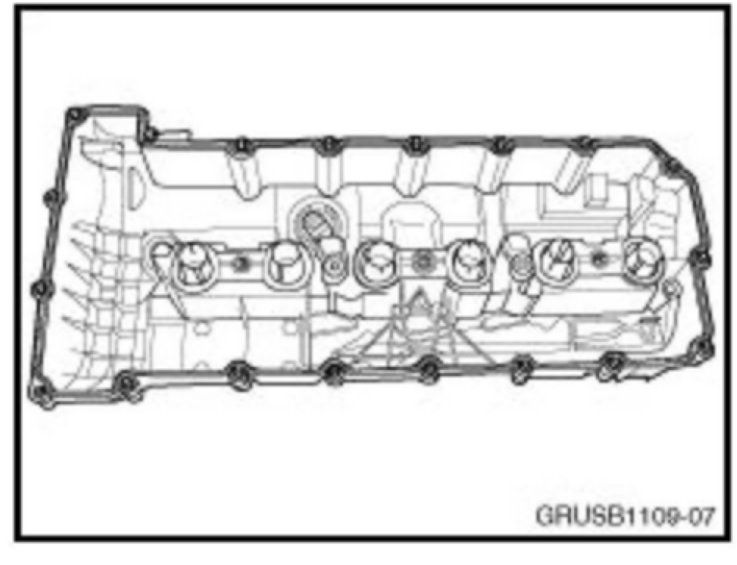

Engine - CPO Engine Inspection Information
SI B11 01 09Engine
Technical Service
March 2012
This Service Information bulletin supersedes SI B11 01 09 dated March 2011.
[NEW] designates changes to this revision
SUBJECT
CPO Inspection Guidelines: Engine Inspection on Vehicles with Extended ("Overdue") Oil Service Intervals
MODEL All
SITUATION
During the CPO inspection process, vehicles with a questionable service history may require further consideration prior to continuing with the CPO inspection.
Such vehicles will fall into the category of "TSE must approve" when qualifying for the CPO Program, using the "CPO Service Guidelines - Maintenance Tables" document (copy is attached). This Service Information bulletin provides the engine inspection procedure for vehicles with an extended ("overdue") service history.
In general, the high quality synthetic oils used in BMW engines provide sufficient protection against oxidation, nitration and thermal breakdown, even in situations when the regular service maintenance was extended ("overdue"), due to the customers neglect.
However, certain external conditions (mainly city driving style and/or high engine loads; poor fuel quality; extreme ambient temperatures), combined with excessively long oil service intervals, may accelerate engine oil degradation, which may cause premature wear of the engine components.
Continuous city driving (stop & go traffic); fuels with high content of olefins; sulfur and certain aromatic fractions; and very high ambient temperatures are the most influential factors causing premature oil aging and a consecutive engine mechanical deterioration.
If the vehicle falls into the category of "TSE must approve" (red zone in the table), the following steps need to be performed in order to determine vehicles CPO eligibility:
1. Remove the engine valve cover (on N62/N62TU and N73 engines, only from the left bank) and the oil filter insert.
2. To document the engine condition, digital pictures of the valvetrain; the inside surface of the valve cover; the oil filter insert; and the identification plate from the left B-pillar must be taken.
3. Create and submit a PuMA case titled "CPO Engine Inspection", which should be categorized as follows:

The submitted PuMA case must describe the vehicles service history and must also have the pictures listed above (taken in "jpeg" format with low resolution camera settings) attached.
4. Based on the information provided in the PuMA case, the TSE will qualify the vehicle for the CPO enrollment. If the TSE determines that the vehicles condition will disqualify it for the CPO Program, then he will reply to the "CPO Engine Inspection" case denying the approval for the CPO Program.
5. If the TSE determines that the vehicle condition is acceptable for the enrollment in the CPO Program, then the TSE will reply to the PuMA case approving the CPO enrollment.
6. The attached illustrations below are the examples of how the engine components should be photographed, and should be used as guidelines in the inspection process.
Example # 1:
Picture of the valvetrain components after the valve cover is removed (camshafts, VANOS units, timing chain, and eccentric shaft - if fitted, should be visible)
Example # 2

Picture of the inside surface of the valve cover
Example # 3
Picture of the oil filter insert
Example # 4
Picture of the vehicles identification plate from the B-pillar
ATTACHMENTS
B110109_Maintenance_Tables.